Material · 12 June 2026
Why 316L is the only steel that belongs in your hand
The same alloy used in surgical implants and dive watches - and why it is the only honest choice for an object you keep for life.
Read · 4 min →
← Home Reserve €119Notes on the material, the craft, and the quiet permanence behind a single, well-made object.
The same alloy used in surgical implants and dive watches - and why it is the only honest choice for an object you keep for life.
Read · 4 min →Thirty diamond teeth, three concentric rings, one sealed bearing. The geometry that slices herb cleanly instead of bruising it.
Read · 5 min →In a world of disposable everything, the particular calm of owning one object built to outlive the habit.
Read · 4 min →